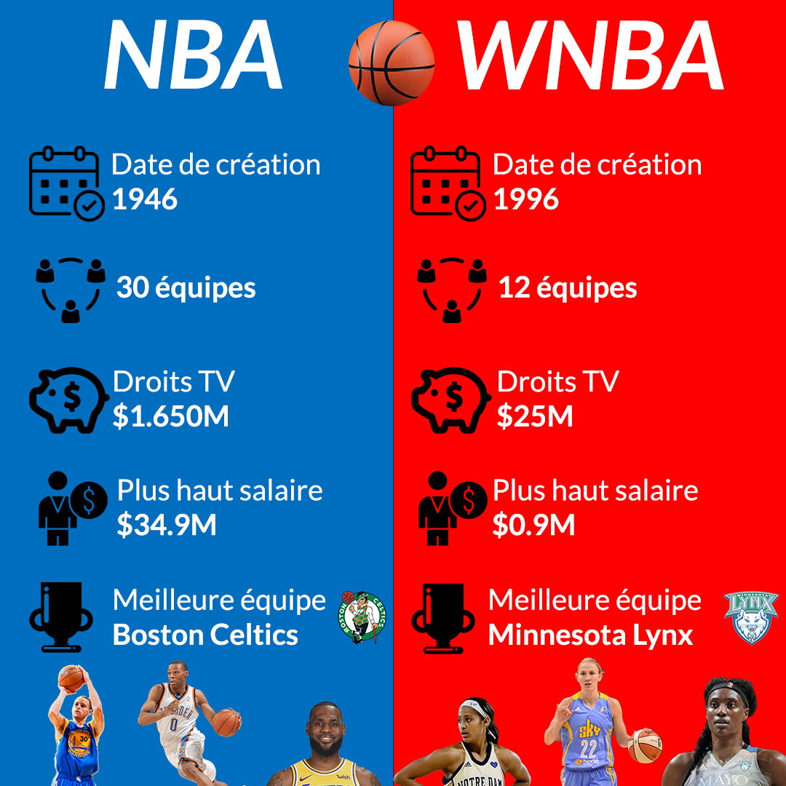

Introduction
Même s’il n’est pas aussi populaire que le football, le
basketball est un des sports collectifs les plus pratiqués dans le monde.
Le basketball a été inventé à la fin du XIXe siècle dans le Massachusetts, aux Etats-Unis.
Il devint petit à petit très populaire dans les écoles et universités, avant de se répandre
à l’international. Aussi, ce n’est pas un hasard si les Etats-Unis dominent le palmarès des
championnats internationaux.
Grâce à cette étude vous saurez :
- Comment fonctionne la NBA
- Quels caractéristiques physiques ont les joueurs
- Des fun facts !
Connaissez-vous Michael Jordan ?
En plus du numéro 23, Michael Jordan a dû porter le numéro 12 lors d'un match car son
maillot avait été volé.
Lors de la saison 1994-1995, il a également porté le numéro 45.

Comment se déroule le championnat ?


Taille moyenne des joueurs NBA 1/2
Les joueurs de basketball sont réputés pour être grands. Et pour cause, la moyenne des joueurs NBA a toujours été au-dessus de la moyenne américaine qui est d'1,76m.

Taille moyenne des joueurs NBA 2/2
"You can't teach height"
Si la majorité des joueurs mesurent presque 2m aujourd'hui,
il est important de se rendre compte qu'être d'une taille inférieure
n'empêche pas quelques joueurs de bien jouer.
Aussi, si le plus grand joueur de la NBA mesurait 2,31m, le plus
petit lui mesurait seulement... 1,60m.
Des millionnaires qui courent après un ballon ?
Lorsque l’on regarde les salaires, il n’y a pas de différence significative entre les joueurs de la NBA les mieux payés et les joueurs FIFA les mieux payés. En revanche, lorsque l’on se penche sur la totalité des revenues (salaire + divers contrats publicitaires), les joueurs FIFA gagnent plus que les basketballeurs.

La durée de carrière
Si les joueurs gagnent autant, il faut se rappeler que leur carrière est très courte. En effet, en moyenne, un joueur fait partie de la NBA pendant 4,8 ans.

La majorité des joueurs sont noirs...
Aujourd'hui, 75% des joueurs de la NBA sont noirs.
...mais une majorité de coachs blancs !
Aujourd'hui, seul 30% des coachs sont noirs.
Et les femmes dans tout ça ?
Les salaires dans la WNBA
- Les salaires à 6 chiffres sont monnaie courante dans le basketball... sauf s’il s’agit d’une femme.
- Les basketballeuses travaillent plus pour être payées moins de la moitié que leurs homologues masculins.
- La joueuse de la WNBA la mieux payée a un salaire 35 fois moins élevé que son homologue de la NBA.

Credits
Site réalisé dans le cadre d'un projet étudiant entre Télécom ParisTech et SciencesPo Paris.
L'objectif et de présenter des visualisation de données conceernant la NBA.
Marie Gouasmi, Martin Pinna et Steven Bias
Lien github du projet : https://github.com/MSMDataVizGroup/dataViz